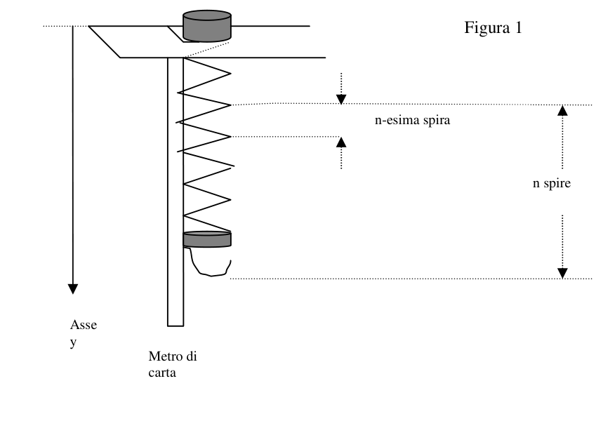

La molla giocattolo
In questa prova utilizzeremo una molla che è capace, tra l’altro, di scendere le scale e di fare altre cose divertenti. Noi però la useremo in più seria!
- Per prima cosa prendi nota del numero di spire che compongono la molla. Poi piega una delle due spire situate all’estremità come è indicato alla voce “molla giocattolo” nell’elenco dei materiali. Fissa il righello, lasciandolo sporgere un po’, al piano della sedia posta sopra il tavolo, per mezzo del nastro adesivo. Infila la molla nel righello lasciandone pendere solo una parte, non più dei due terzi delle spire. Il gancio va in basso e servirà per appendere alla molla le rondelle di massa nota. Servendoti ancora di nastro adesivo, fissa il metro di carta (dalla parte dello zero) sul righello; il metro, opportunamente appesantito con i fermagli per renderlo “a piombo”, permette di rilevare le posizioni y delle varie spire (vedi figura 1). Per facilitare le letture sul metro, fa’ in modo che la sua graduazione sia a contatto con la molla e che si trovi dietro la molla stessa rispetto ai tuoi occhi.
a) - Ricava sperimentalmente la funzione = f (n) , dove è la lunghezza assunta in direzione verticale dalla singola n-esima spira con molla scarica, ed n è il numero di spire sottostanti (vedi Figura 1). b) - Determina la massa della molla con la minor incertezza possibile.
- In questa seconda fase, la molla andrà sospesa in posizione ribaltata rispetto alla precedente. Fai passare la spira senza gancio, quella che sarà all’estremità più bassa della molla, attorno al bordo del bicchierino, per sorreggerlo, e serviti di un po’ di nastro adesivo per fissarla meglio. Infila poi nel bicchierino le due cannucce a croce. Quando la molla oscilla in verticale, dopo un po’ di tempo cessa la propagazione di perturbazioni lungo la molla stessa e le spire oscillano all’unisono. Se avvengono solamente oscillazioni longitudinali, il loro periodo viene detto “periodo proprio” delle oscillazioni longitudinali. Oltre a queste oscillazioni , la molla può compiere anche oscillazioni torsionali in un piano orizzontale. Queste oscillazioni sono evidenziate se infili nelle cannucce alcune rondelle, mantenendo le cannucce stesse orizzontali: aumenta così il momento d’inerzia del sistema bicchierino-cannucce, che altrimenti sarebbe trascurabile, così come è trascurabile se le rondelle vengono poste dentro il bicchierino. Se non ci fossero contemporaneamente anche le oscillazioni longitudinali, le oscillazioni torsionali del sistema avrebbero un “periodo proprio” dato dalla relazione Ttorsionali = 2 (I/C) 1⁄2 ove I indica il momento d’inerzia del sistema oscillante e C il rapporto tra il momento della forza di torsione e l’angolo di rotazione, se quest’ultimo non è troppo grande. I due moti di oscillazione si influenzano a vicenda, ma in situazioni particolari, dette di risonanza, avviene un trasferimento pressoché totale di energia dall’uno all’altro; in questi casi i due “periodi”1 , coincidono con quelli propri e sono uguali tra loro, con buona approssimazione;
a) Lascia pendere 60 spire della molla, infila nelle cannucce complessivamente 12 rondelle distribuendole sulle cannucce stesse come ritieni più opportuno; regola poi la distanza di queste dall’asse di rotazione fino a che osservi che il moto di oscillazione orizzontale si alterna con quello verticale con uno scambio completo di energia (situazione di risonanza): quando uno cessa l’altro ha la massima ampiezza, e viceversa. È importante far partire il sistema sempre dalla stessa situazione iniziale: in particolare, il bicchierino va posto a non più di 5 o 6 cm dalla posizione di equilibrio statico, senza alcuna torsione della molla.
- Quanto vale il “periodo” proprio di ciascuno dei due moti oscillatori?
- A quale o quali distanze dall’asse della molla hai posto le rondelle?
- In questa situazione determina C esprimendola in unità di misura SI.
b) Dalla prima situazione di risonanza, prevedine un’altra con solo 30 spire in oscillazione e sempre con 12 rondelle. Per fare la previsione richiesta è necessaria anche un’ipotesi sul nuovo valore C’ del rapporto tra momento della forza di torsione e angolo di rotazione: l’ipotesi è che C’ sia inversamente proporzionale al numero di spire che oscillano. Difatti la parte oscillante diventa più rigida al diminuire del proprio numero di spire.
- A quale distanza dall’asse longitudinale della molla prevedi che andranno sistemate le rondelle?
- Controlla se alla distanza prevista c’è la risonanza, altrimenti aggiusta la posizione delle rondelle fino ad ottenerla. Quanto vale il “periodo” proprio di ciascuno dei due moti oscillatori?
- Quanto vale la nuova C’ ricavata dalle misure, in unità SI? Questo valore e l’ipotesi di proporzionalità inversa con il numero di spire sono coerenti tra loro? Da’ una risposta motivata.
1 Viene indicato con “periodo” la durata di un’oscillazione completa, anche se, come potrai vedere, non si tratta di moti periodici veri e propri, in quanto l’ampiezza varia vistosamente durante il movimento. Il “periodo” è però pressoché costante.
Indica chiaramente e brevemente il procedimento seguito per rispondere alle varie richieste. Trascrivi poi le risposte sintetiche nel “QUADRO RIASSUNTIVO” che consegnerai con la relazione. Il punteggio che verrà assegnato dipenderà dalla correttezza, completezza e chiarezza delle risposte e sarà al massimo di 200 punti.
Materiali e indicazioni: • Molla giocattolo. Piega a metà la spira ad una delle due estremità, ruotandola di attorno al suo diametro, fino a formare un gancio perpendicolare alla giacitura delle altre spire (v. disegno a lato). • 12 rondelle. La loro massa complessiva è indicata in grammi sulla confezione con un’incertezza di 0,1g. Le masse delle singole rondelle possono differire tra loro al massimo dello 0,4% • Un bicchierino di plastica con due coppie di fori per inserire le cannucce • Cannucce da bibita. Prova a infilare una rondella su ciascuna cannuccia e assicurati che possa scorrere con una certa facilità. Se la cannuccia è troppo grossa, scartala e prova con un’altra. Usa solo il pezzo rigido lungo circa 18 cm, taglia via il resto dall’inizio della pieghettatura. Ti serviranno solo due cannucce, a meno che tu non ritenga che siano troppo corte. In questo caso puoi aumentarne la lunghezza inserendo una cannuccia in un’altra: schiaccia e piega lungo l’asse longitudinale un pezzetto di cannuccia lungo un paio di centimetri, per poterlo infilare così assottigliato nell’altra cannuccia, fino a bloccarvelo. • Pennarello indelebile per segnare il punto medio e punti a distanze note sulle cannucce, per contrassegnare eventualmente qualche spira di riferimento • righello per sostenere la molla • righello per effettuare misure • nastro adesivo di carta per fissare il righello alla sedia e per fissare il bicchierino alla molla • cronometro • metro di carta da fissare al righello con nastro adesivo, e da lasciar pendere lungo la molla • fermagli da carta da fissare in fondo al metro per appesantirlo e renderlo “a piombo” • sedia come supporto per la molla, da porre sul banco • piatto da porre sul pavimento, in corrispondenza della molla appesa, per evitare che le rondelle rotolino via sul pavimento, in caso di caduta della molla. Specialmente nella seconda fase, controlla che la molla sia sempre ben appoggiata sul righello che la sostiene.
Sul tavolo di servizio: • Carta millimetrata • Forbici n spire n-esima spira Metro di carta Figura 1 Asse y Nelle n spire è compresa quella piegata a gancio
N.B. Questo foglio va consegnato insieme con la relazione
NOME NUMERO DEL TAVOLO
QUADRO RIASSUNTIVO
Risultati 1 a
= f (n)
1 b
massa della molla
“periodo” delle oscillazioni longitudinali
“periodo” delle oscillazioni torsionali
distanza/e misurata
p.2 — Apparato: molla appesa con bicchierino e metro

Topic: Oscillations & Waves, Rotational Dynamics, Elasticity & Materials Metodi: Simple Harmonic Motion Analysis, Experimental Data Analysis, Torque & Angular Momentum Analysis Competenze: Experimental Data Analysis, Mathematical Modeling, Measurement & Instrumentation Objects: Spring Fonte: Testo (PDF) — p.1 Soluzione: Soluzioni (PDF)
The toy is dropped
In this test we will use a spring that is capable, among other things, of going down stairs and doing other fun things. We però la useremo in più seria!
- First, note the number of spires that make up the spring. Then fold one of the two spires in the position at the end as indicated in the entry moll toy in the list of materials. Fix the ruler, leaving it a little, on the floor of the chair above the table, by means of the adhesive tape. Put the spring in the reel and leaving only a part of it hanging, not more than two thirds of the spires. The hook goes down and it’ll be used to hang The sponges are known to spring. Using adhesive tape, hold the paper meter (on the side of the The meter, properly weighed with the stoppers to make it a lead, allows the The position of the various spires (see Figure 1) shall be detected. To facilitate the reading on the subway, make sure that your graduation is in contact with the spring and that it is behind the spring itself relative to your eyes.
(a) - Experimentally derives the function = f (n) where is the length taken in the vertical direction by the The number of spires is the number of spires underneath (see Figure 1). (b) - Determine the mass of the spring with the least possible uncertainty.
- In this second phase, the spring shall be suspended in an upside down position from the previous one. Let the spire pass without hook, the one at the lower end of the spring, around the edge of the glass, to hold it, and Use a little tape to fix it better. Then pour the two cross-striped straws into the glass. When the The spring oscillates vertically, after some time the spread of disturbances along the spring itself and the The winds oscillate in unison. If only longitudinal oscillations occur, their period is called period The length of the line is the same as the length of the line. In addition to these oscillations , the spring can also oscillate torsional in a horizontal plane. These oscillations are highlighted if you insert some swirls into the canes, keeping the straws themselves horizontal, thus increasing the momentum of the glass-straw system, which would otherwise be negligible, just as it is negligible if the sponge is placed inside the glass. If there were no simultaneous longitudinal oscillations, the torsional oscillations of the system would be They would have a period of their own given by the torsional relation = 2 (I/C) 1⁄2 where I indicates the moment of inertia of the The torque ratio of the torque to the rotation angle, if the torque is not It’s too big. The two modes of oscillation affect each other, but in particular situations, called resonance, The energy transfer takes place almost entirely from one to the other; in these cases the two periods coincide. with their own, and they are equal in kindness.
(a) Let 60 spires of the spring hang, and inject 12 spindles into the reeds, spreading them over the The rotor shall be rotated at the same speed as the rotor. Observe that the horizontal oscillation motion alternates with the vertical one with a complete exchange of energy (resonance situation): when one stops the other has the maximum amplitude, and vice versa. It’s important The system must always be started from the same initial situation: in particular, the glass must be placed at no more than 5 or 6 cm from the static equilibrium position, without any torsion of the spring.
- How much is the period of each of the two oscillating motions?
- How far from the spring axis did you put the swirls?
- In this situation, C is determined by the SI unit of measurement.
(b) From the first resonance situation, predict another with only 30 oscillating spires and always 12 I’m going to have to go. The new C value of the ratio between the two is also required to make the required forecast. torsion force moment and angle of rotation: the hypothesis is that C is inversely proportional to the number of oscillating spires. In fact, the oscillating part becomes stiffer as its number of oscillators decreases. I’m going to breathe.
- How far from the longitudinal axis of the spring do you expect the swirls to be fixed?
- Check if the resonance is at the intended distance, otherwise adjust the position of the pendulums until the I’m going to get it. What is the value of the period of each of the two oscillating motions?
- What is the value of the new C obtained from the measurements in SI units? This value and the proportionality hypothesis So the inverse with the number of spires are consistent with each other? Give a reasoned answer.
1 The duration of a complete oscillation is indicated by period, although, as you will see, this is not the case for The time period is real, as the width varies markedly during movement. The period is however almost constant.
It shall clearly and briefly indicate the procedure followed to respond to the various requests. Then transcribe the The summary answers in the RESUNTIVO you will provide with the report. The score that will come The number of points shall be limited to 200 points.
Materials and indications: • Take off the toy. Bend the spire in half at one end, rotating it of around its diameter, until it forms a hook perpendicular to the bed of other spirals (v. (see drawing on the side). • 12 shrimp. Their total mass is indicated in grams on the packaging. with an uncertainty of 0,1 g. The masses of individual roundworms may differ from each other Not more than 0,4% • A plastic glass with two pairs of holes for inserting the straws • Cannibals for a drink. Try to put a sponge on each straw and Make sure it can run with ease. If the straw is too big, You just throw it away and try another one. Use only the rigid piece about 18 cm long, cut off the rest from the beginning of the The folding. You’ll only need two strawberries, unless you think they’re too short. In that case, you can The length of the straw increases by inserting one straw into another: squeeze and fold along the longitudinal axis a piece of straw The straw is a couple of centimeters long, so you can stick it so thinly into the other straw, until you’re blocked. • Unbleachable marker for the middle and distant points known on the straw, for marking If any, reference spires • a ruler to support the spring • the right to take measures • Paper adhesive tape for attaching the seat rack and the glass to the spring • The time-meter • 1 metre of paper to be fastened to the rack with adhesive tape and left hanging along the spring • Paper stoppers to be fixed at the bottom of the meter to weigh it and make it lead • a chair for the spring, to be placed on the bench • a flat plate to be placed on the floor, in the same place as the spring, to prevent the swirls from rolling away on the floor floor, in case of falling spring. Especially in the second phase, make sure the spring is always good. leaning on the rear support.
On the service table: • Other paper • Other Notwithstanding the provisions of this Article, N-third spiral Metro of paper The following is the list of the following: Other axes y In the n spiral is including the Folded by hook
N.B. This paper must be delivered together with the report
Name of the table number
The Commission shall adopt implementing acts in accordance with Article 21 of this Regulation.
Results 1 a
= f (n)
1 b
mass of the spring
period of the The following conditions shall apply:
period of the The following shall be added:
distance/measured
**p.2 ** Appliance: spring suspended with glass and meter
Topic: Oscillations & Waves, Rotational Dynamics, Elasticity & Materials Metodi: Simple Harmonic Motion Analysis, Experimental Data Analysis, Torque & Angular Momentum Analysis Competenze: Experimental Data Analysis, Mathematical Modeling, Measurement & Instrumentation Objects: Spring Fonte: Testo (PDF) — p.1 Soluzione: Soluzioni (PDF)